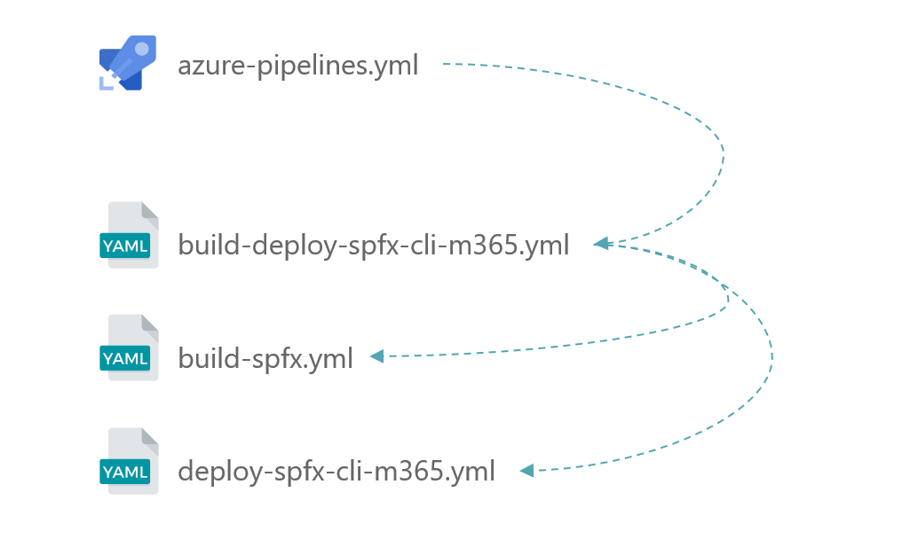
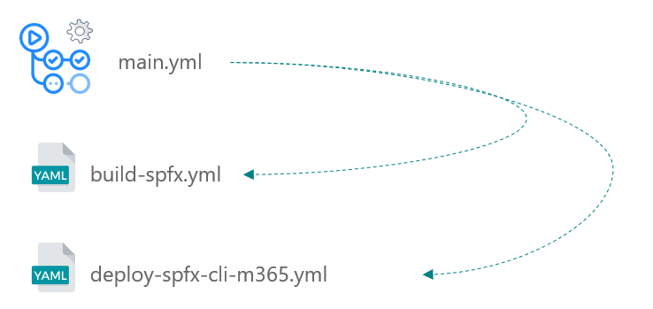
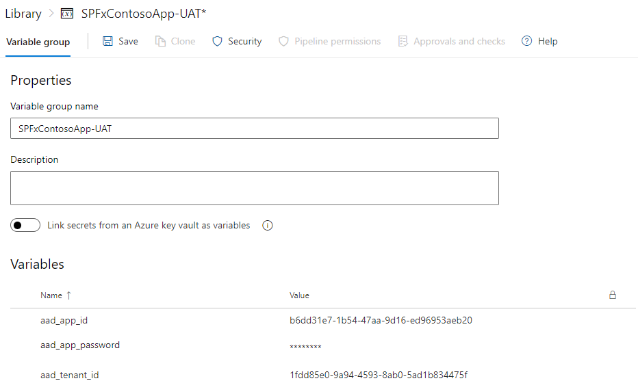
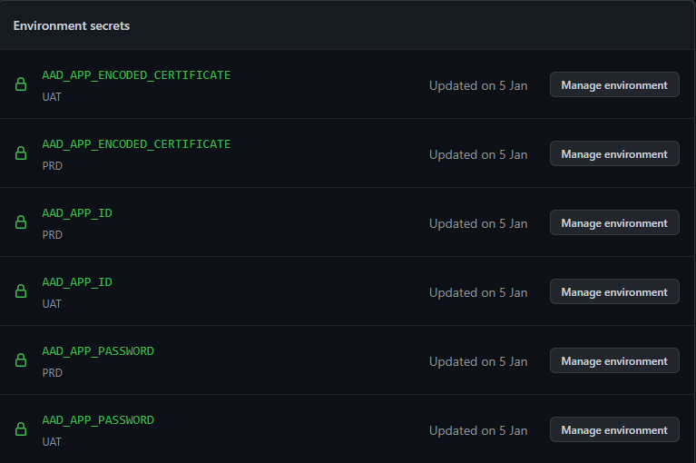

Apply a DevOps process to your SPFx project (Part 3)
Goal of this article (reminder)
This article series will show how to apply a DevOps process by using tools like Azure DevOps or GitHub Actions, using multi-stage / environment pipelines to deploy on environments such as UAT, in order to validate an improvment or a hotfix before going to production.
The third part will show how to implement technical solutions by using CI / CD pipeline templates.
Scenarios context
When working on enterprise solutions, we are always facing the question of "testing" before pushing on production environment, to ensure that new features or fixes are working as expected.
Thanks to the site collection app catalog, we have this opportunity (for the use cases exposed in the first part)!
We saw previously two major scenarios that can be applied in a company as a DevOps process. This part will talk about applying those scenarios with two well-known CI / CD solutions: GitHub Actions & Azure DevOps (AzDO).
In this article, we'll focus on the scenario where a testing site already exists.
CI / CD pipelines digging
For both solutions, we will use "pipeline" (Azure DevOps) / "workflow" (GitHub Actions) templates. This will provide us guidance on how to reuse and adapt them to our business context.
Also, we have to "setup" (that's a quick word) the host that will run our pipeline. Think of this host as a "disposable" / ephemeral machine that is configured only to run specific tasks, then disapear. A host is required for a pipeline / workflow, so we will have at least two hosts needed: one for the CI, one for the CD and each of them will be independant.
It's important to keep that in mind for the rest of this article 😉.
Our SPFx solution will have a "main" pipeline, which will call our templates.
Templates structure
Below we'll find a schema for each platform, to understand how the templates are organized.

- A generic pipeline (
azure-pipelines.yml) will be triggered as the initiator -
It will call a global CI / CD template (
build-deploy-spfx-cli-m365.yml), that will call subsequently- CI pipeline (
build-spfx.yml) - CD pipeline, using CLI for Microsoft 365 (
deploy-spfx-cli-m365.yml) (or PnP PowerShell)
- CI pipeline (

-
A generic pipeline (
main.yml) will be trigger as the initiator that will call subsequently- CI pipeline (
build-spfx.yml) - CD pipeline, using CLI for Microsoft 365 (
deploy-spfx-cli-m365.yml) (or PnP PowerShell)
- CI pipeline (
Security
If order to deploy securely our SPFx solution, we have to register credentials (certificate authentication) per environment (remember that we want to deploy first on UAT, then on PRD). Here are the main approaches for the two platforms.

- Using secret variables, linked to environments through pipeline template (with permissions), to keep sensitive information safe
- Using secure file storage to hold certificate file, linked to environments through pipeline template (with permissions), used for authentication

- Using secret variables, linked to environments, to keep sensitive information
As we can see, there's no secure file storage available in GitHub Actions, but we'll see a little bit later that we can afford that 😁
(in the next part and for the AzDO only, we will skip the in-between template build-deploy-spfx-cli-m365.yml, in order to focus on the CI / CD)
Authentication with Azure AD
Whether we choose to use GitHub Actions, AzDO as the CI / CD platform, and PnP PowerShell or CLI for Microsoft 365 as the ALM tool, we'll have to authenticate to SharePolint Online to deploy our solution. As this can't be done with our own account in a DevOps philosophy, it's better to do so with a dedicated authentication, meaning application context, which is provided by Azure AD Applications.
So to be sure to authenticate correctly and to give the rights keys (as an Ops remember 👀), the AAD application will have to be configured with the following info:
- Certificates & secrets
- Add a certificate file (.pem, crt or .cer), for which we'll have the thumbprint info and encoded file or .pfx file (depending on the CI / CD platform)
- API permission
- Add SharePoint application permission "Sites.FullControl.All"
Continuous Integration
In this section, we will cover following steps:
- Configuring the trigger (what will be done to run the pipeline)
- Specifying input parameters
- Determine the host OS
- Checking out our last repo sources
- Setting NodeJS version (as a prerequisite to build our SPFx package)
- Installing required NPM packages (as mentioned in the
package.jsonfile) - Bundling the solution
- (optionally) testing the solution
- Packaging the solution
- Uploading it as an artefact, to make it available for the CD part
CI Triggers & Inputs
First thing is to specify what will make the pipeline run.
1 2 3 4 5 | |
1 2 3 4 5 6 7 8 9 10 | |
CI Jobs
Then specify the job details, the core of the pipeline which has an ephemeral state. First, the host OS:
1 2 3 4 5 6 7 8 9 10 | |
1 2 3 4 | |
CI Steps
Now the details steps that will call all the tasks to complete the CI part.
Starting with the repo checkout, the node configuration and npm packages installation.
1 2 3 4 5 6 7 8 9 10 11 12 13 14 15 | |
1 2 3 4 5 6 7 8 9 10 11 12 13 14 15 16 | |
Then bundling the sources and testing it when input include_tests is set to true.
1 2 3 4 5 6 7 8 9 10 11 12 13 14 15 | |
1 2 3 4 5 6 7 8 9 10 11 12 | |
Last part is to package the solution, then make it available for the CD part.
1 2 3 4 5 6 7 8 9 10 11 12 13 14 15 16 17 18 19 20 21 | |
1 2 3 4 5 6 7 8 9 10 11 12 13 | |
Continuous Delivery
Now that we've completed ou CI / build pipeline, let's rollout the deployment process!
To make things "readable" in this post, we'll take the existing testing site scenario as an example.
Below the steps of the CD part:
- Configuring the trigger (what will be done to run the pipeline)
- Specifying input parameters
- Determine the host OS
- Getting the SPFx package uploaded in the CI pipeline as an artefact
- Setting NodeJS version (as a prerequisite to build our SPFx package)
- Installing the CLI for Microsoft 365
- Authenticating to SharePoint Online using the CLI for Microsoft 365
- For the UAT environment
- Deploying the SPFx solution to the site dedicated to tests
- For the PRD environment
- Deploying the SPFx solution to the targeted and specified app catalog
Keep in mind that this pipeline will be used twice: UAT & PRD environments.
Warning
This use case states that the SPFx app is already installed on both testing and production environments
CD Triggers & Inputs
First thing is to specify what will make the pipeline run.
1 2 3 4 5 6 | |
1 2 3 4 5 6 7 8 9 10 11 12 13 14 15 16 17 18 19 20 21 22 23 24 25 26 27 28 29 30 31 32 33 34 35 36 37 38 39 40 | |
CD Jobs
Then specify the job details, the core of the pipeline which has an ephemeral state. First, the host OS:
1 2 3 4 5 6 7 8 9 10 11 | |
1 2 3 4 5 | |
CD Steps
Now the details steps that will call all the tasks to complete the CD part.
Starting with getting the SPFx package, configuring node and installing the deployment tool (CLI for Microsoft 365 or PnP PowerShell).
1 2 3 4 5 6 7 8 9 10 11 12 13 | |
1 2 3 4 5 6 7 8 9 10 11 12 13 14 15 | |
Then authenticating to SharePoint Online, configure error handling and download the built SPFx package
1 2 3 4 5 6 7 8 9 10 11 12 13 14 15 16 17 18 19 20 21 22 23 24 25 26 27 28 | |
1 2 3 4 5 6 7 8 9 10 11 12 13 14 15 16 17 18 19 20 21 22 23 24 25 | |
Next step is to add & deploy the SPFx package to the testing site, then in Production
1 2 3 4 5 6 7 8 9 10 11 12 13 14 15 16 17 18 19 20 21 22 23 24 25 26 27 28 29 30 31 32 | |
1 2 3 4 5 6 7 8 9 10 11 12 13 14 15 16 17 18 19 20 21 22 23 24 25 26 27 28 29 30 31 32 33 34 35 36 37 38 39 40 41 42 43 44 45 46 47 48 49 | |
Notice that in the PRD environment, we're not targeting the tenant app catalog, as it also can be a site collection app catalog.
Trigger pipeline
The last "step" is to configure the pipeline that will trigger our whole CI / CD process.
For Azure DevOps, we have the opportunity to reference a global CI / CD pipeline (build-deploy-spfx-cli-m365.yml), for which we'll provide important steps, such as environment variable groups.
1 2 3 4 5 6 7 8 9 10 11 12 13 14 15 | |
1 2 3 4 5 6 7 8 9 10 11 12 13 14 15 16 17 18 19 20 21 22 23 24 25 26 27 28 29 30 31 32 33 34 35 36 37 38 39 | |
1 2 3 4 5 6 7 8 9 10 11 12 13 14 15 16 17 18 19 20 21 22 23 24 25 26 27 28 29 30 31 32 33 34 35 36 37 | |
Pipeline files
Below you'll find the complete pipeline files with an abstract, which will be enough as a starter kit to setup everything on your side.
CLI for Microsoft 365
PnP PowerShell
Solution configuration
Below we'll have all the minimum configuration to make our pipeline working on both AzDO and GitHub Actions.
AzDO configuration
In this context, we'll use three important features:
- Environments
- Approvers
- Variable groups
During the pipeline run, both CI and CD parts are considered as "Stages". As the UAT and PRD deployments will have to access to environments, secure files and variable groups, we will have to give permission for those stages once.
For each of those, we will have to permit the pipeline to access to them only on the first run. This will be seen on the pipeline run page, as we'll see that the UAT / PR deployments will be pending for approving permissions. More info here.
The environments will be necessary for approving a pipeline before being run. We'll have to add two environments:
- UAT (testing)
- PRD (production)
Environments can be configured here: https://dev.azure.com/[ORGANIZATION]/[PROJECT]/_environment.
For each environment, we can add an approver by clicking on the three dots located in the upper right of it, then "Approvals and checks" and select "Approvals".
Last part to configure are the variable groups, which will be called by our deployment pipeline. As this one will be called twice (one for testing, the other for production), the variable groups will be associated with the environments created before. Here again, two variable groups will be created:
- contoso-UAT (testing)
- contoso-PRD (production)
Variable groups can be configured here: https://dev.azure.com/[ORGANIZATION]/[PROJECT]/_library?itemType=VariableGroups.
Below the variables used in the pipelines, depending on the context:
| Name | UAT | PRD | Secret value? | Definition |
|---|---|---|---|---|
aad_app_id |
YES | YES | NO | The Azure AD application ID with which the authentication to SharePoint will be done |
aad_app_password |
YES | YES | YES | The certificate password necessary for the authentication |
aad_tenant_id |
YES | YES | NO | ID or domain (for example "contoso.onmicrosoft.com") of the tenant from which accounts should be able to authenticate |
app_catalog_scope |
NO | YES | NO | Production app catalog scope (can be "tenant" or "site collection") |
site_url_uat |
YES | NO | NO | SharePoint UAT site URL where the SPFx package will be deployed |
app_catalog_site_url |
NO | YES | NO | Production app catalog site URL (can be a tenant or a site collection one) |
site_url_prd |
NO | YES | NO | SharePoint PRD site URL where the SPFx package will be deployed |
Especially for AzDO, we will use the Secure files feature to store a PFX file in order to login to SharePoint in Application context. In this example, we'll use one PFX file for both testing and production environments: PnP.SharePoint.AppOnly.pfx.
Secure files can be configured here: https://dev.azure.com/[ORGANIZATION]/[PROJECT]/_library?itemType=SecureFiles.
GitHub Actions configuration
The environments will be necessary for approving a pipeline before being run. You'll have to add two environments:
- UAT (testing)
- PRD (production)
Environments can be configured here: https://github.com/[ORGANIZATION]/[PROJECT]/settings/environments.
Beware that in order to use multiple environments, your repo has to be public or your subscription has to be a Pro one.
For each environment, you can add an approver by enabling the checkbox marked "Required reviewers", then adding at least one reviewer account then click on "Save protection rules".
Environment secrets can be configured here: https://github.com/[ORGANIZATION]/[PROJECT]/settings/environments/[ENVIRONMENT_ID]/edit.
Below the secrets used in the workflows:
| Name | Description |
|---|---|
AAD_APP_ID |
The Azure AD application ID with which the authentication to SharePoint will be done |
AAD_APP_PASSWORD |
The certificate password necessary for the authentication |
AAD_APP_ENCODED_CERTIFICATE |
Base64 encoded certificate |
AAD_APP_THUMBPRINT |
Certificate thumbprint |
AAD_TENANT_ID |
ID or domain (for example "contoso.onmicrosoft.com") of the tenant from which accounts should be able to authenticate |
Below the parameters used in the deploy-spfx-cli-m365.yml workflow, depending on the environment:
| Name | UAT | PRD | Definition |
|---|---|---|---|
environment_name |
YES | YES | The deployment environment (can be 'UAT' or 'PRD') |
site_url_uat |
YES | NO | SharePoint UAT site URL where the SPFx package will be deployed |
site_url_prd |
NO | YES | SharePoint PRD site URL where the SPFx package will be deployed |
app_catalog_scope |
NO | YES | Production app catalog scope (can be "tenant" or "site collection") |
app_catalog_site_url |
NO | YES | Production app catalog site URL (can be a tenant or a site collection one) |
Other source code
Ephemeral testing site (which will run with PnP PowerShell only, as it will use the Provisioning Engine to create a copy of existing production site):
Conclusion
Doing so, we'll secure the credentials for each environment and give the entire control to the Ops.
The last part will point out advantages / drawbacks on the two solutions regarding this implementation.
Navigation
Apply a DevOps process to your SPFx project (Part 1)
Apply a DevOps process to your SPFx project (Part 2)
Apply a DevOps process to your SPFx project (Part 3)